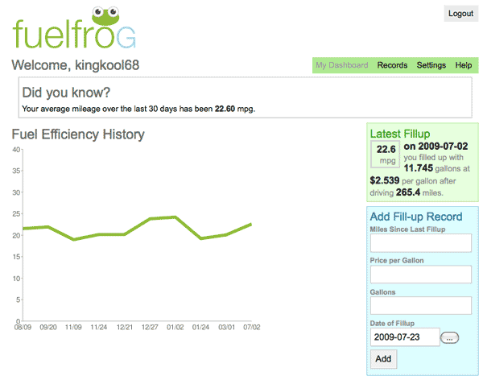

The New Car Conundrum: What Should I Get?
My 1994 Mercury Villager mini-van has served me well over the years but it has to go according to the U.S. Government. Since it gets a measly 17 combined miles per gallon according to fueleconomy.gov, my van is a certified clunker and eligible for the Cash for Clunkers program. This means I can get $3,500 off a new car purchase that gets at least 4 more miles per gallon or a $4,500 discount for a car that gets at least 10 more miles per gallon. That’s a sweet deal considering the Kelley Blue Book trade-in value is at most $1,550.
The thing is I don’t really need a new car. I get to work using public transportation leaving the van only for small errands. Once a year we will take it on a road trip to Ocean City but that’s about the extent of my driving. I fill it up maybe once a month and according to FuelFrog (my review) I’m getting about 22 miles per gallon.

Because it has 130,000 miles on it, the tune-ups can be a bit costly about every other year. I have started noticing a high-pitched squeal whenever the accelerator is depressed and one of these days it will die.
With this opportunity I decided to do a bit of research on Yahoo! Autos. I found 21 cars that fit my criteria including the 2010 Honda Insight, 2009 Honda Fit, and 2009 Honda Civic hybrid which all caught my eye. Kristina doesn’t like any of these because she already has a small sedan and strategically it would make sense to get another type of vehicle. I can agree with that, but bigger cars are more expensive.

There is also the option of brokering a deal with my dad for his Toyota Rav-4 with 100,000 miles on it in exchange for a car with the discount. He was the one who bought the van 15 years ago and paid it off before handing it over to me but such a deal sounds complicated.
I just feel a little weird about getting a new car and then having it sit at home for most of its early life. So this is where I seek advice from the wisdom of the interwebz. What should I do?
On the plus side an auto loan would help me build my credit score for when we eventually buy a house 

deal w/ dad. doesn’t sound that complicated, and your brain was built for that kind of stuff anyway.
c4c is such a good deal, and you need some kind of new car. tough to pass up.
i can’t believe that van is worth even that much.
Reply
Normally I would buy a used car that someone else already took a depreciation hit for. But this has to be a brand new car so it’s a tough decision.
I have a 2008 Honda Fit. Its a bit underpowered but I hear the 2009 has more power.
Maintenance on the Fit is pretty cheap if you avoid the dealer. When the maintenance light comes on take it in for an oil change (and sometimes a rotation). This is about every 9 months for me but I suspect it will be over a year for you. Now that I left AOL it will probably be a year before my next service.
I like the seat configurations in the Fit. I flip the 2 back seats up and put my bike in the 2nd row instead of putting it in the hatch (front wheel off to make this work).
Reply
That is a good recommendation. I’m kind of warming up to the Fit. Thanks Tony.